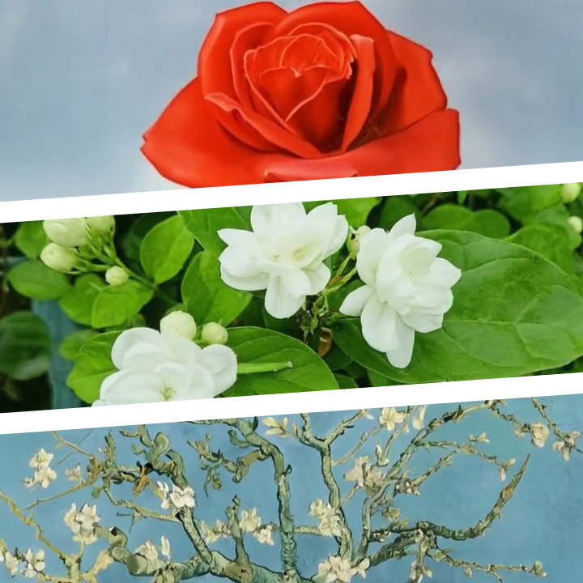
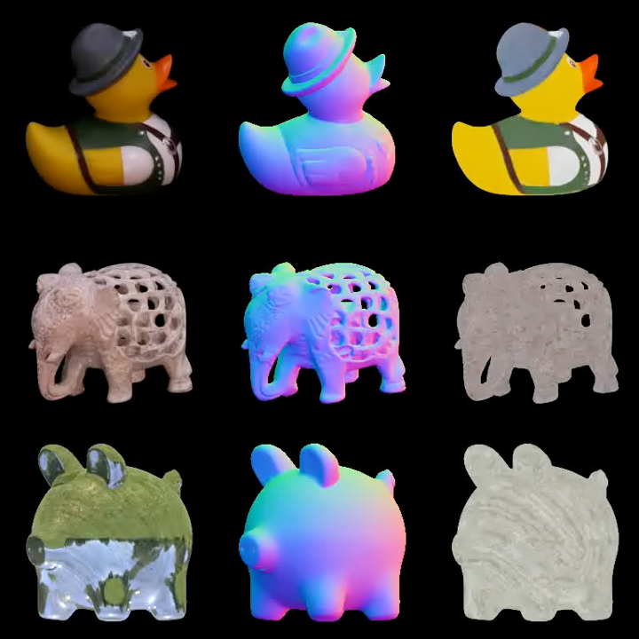
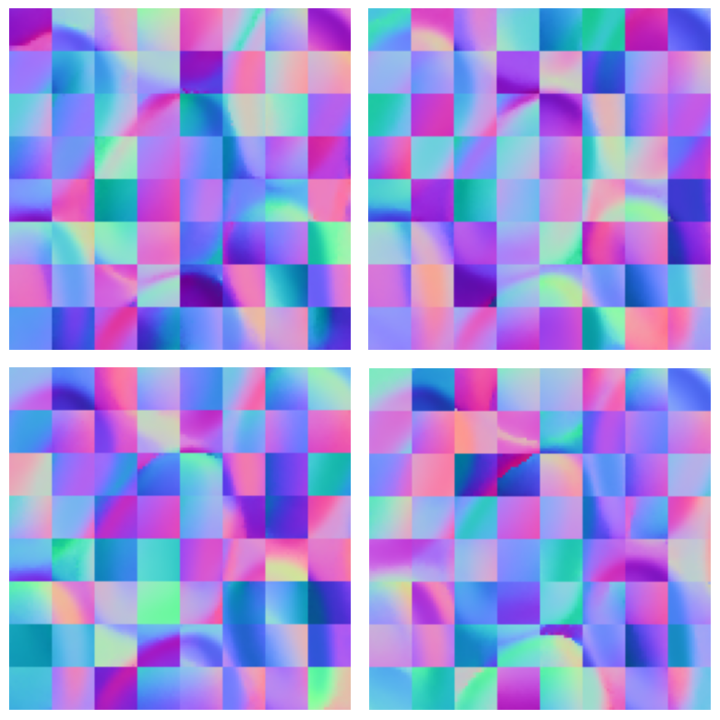
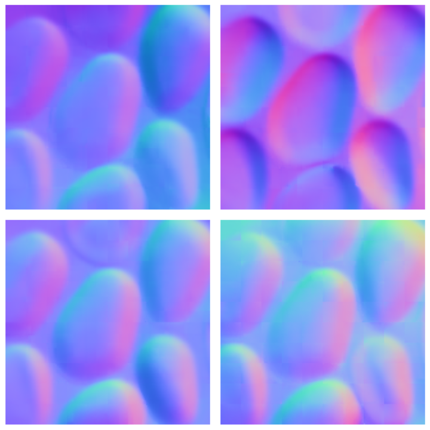
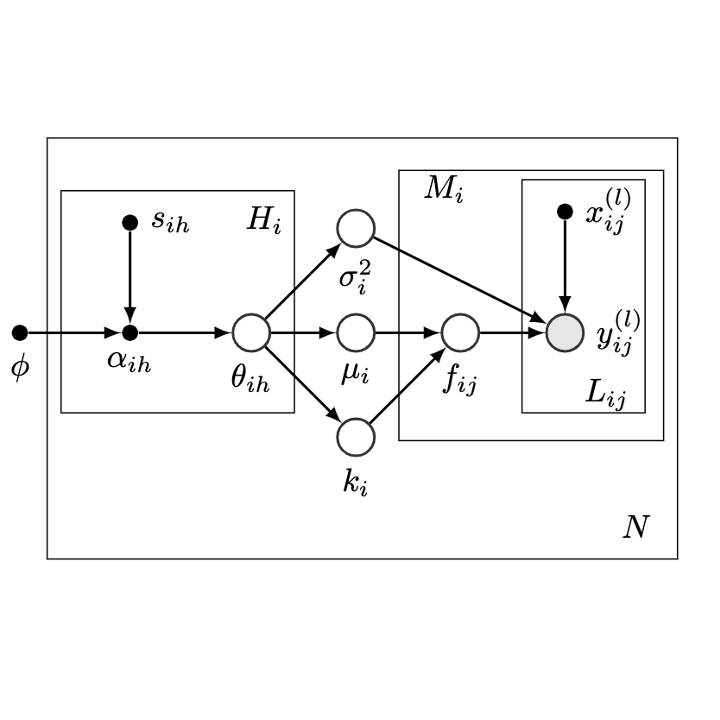
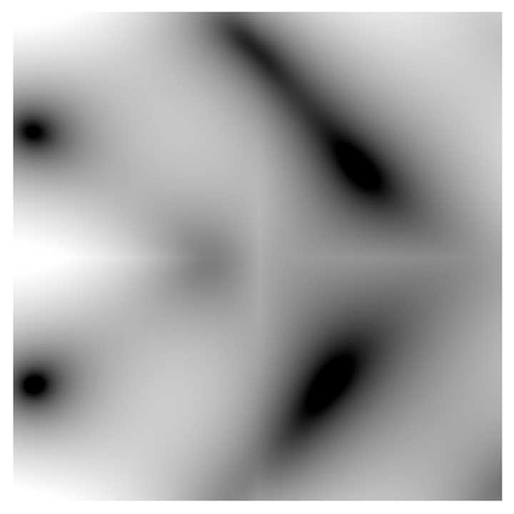
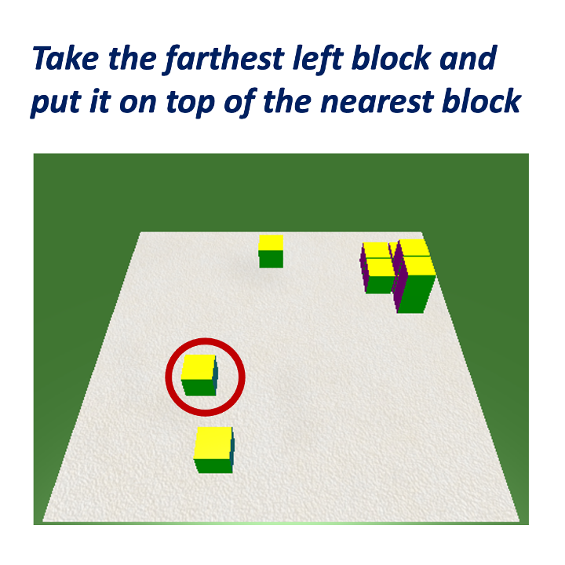
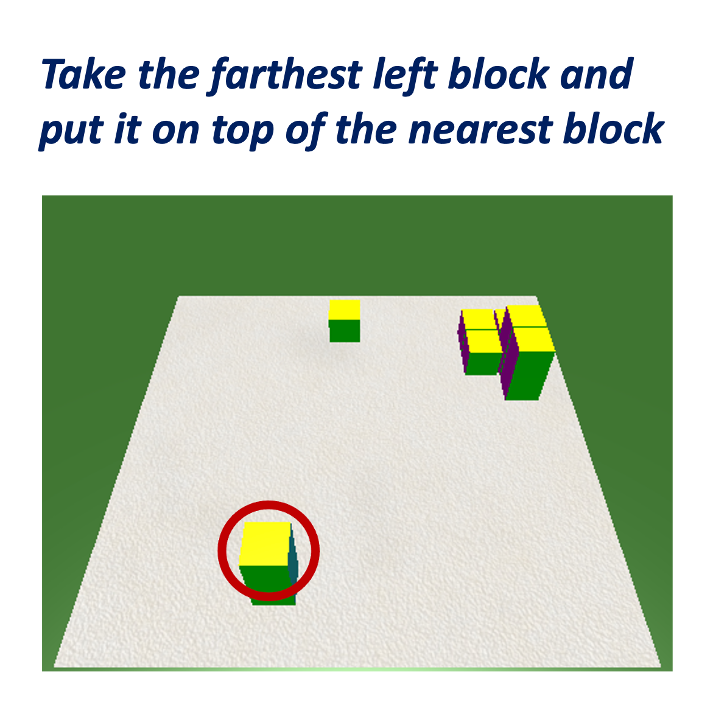
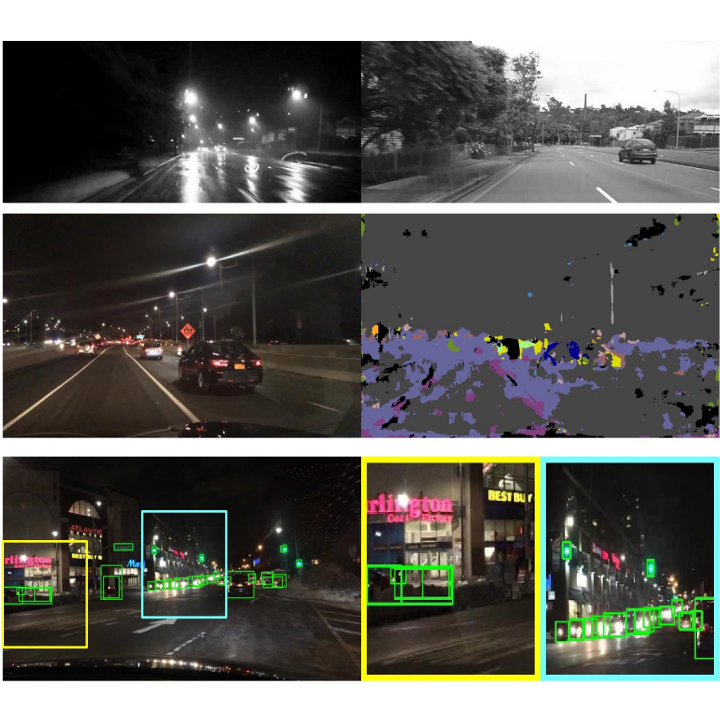
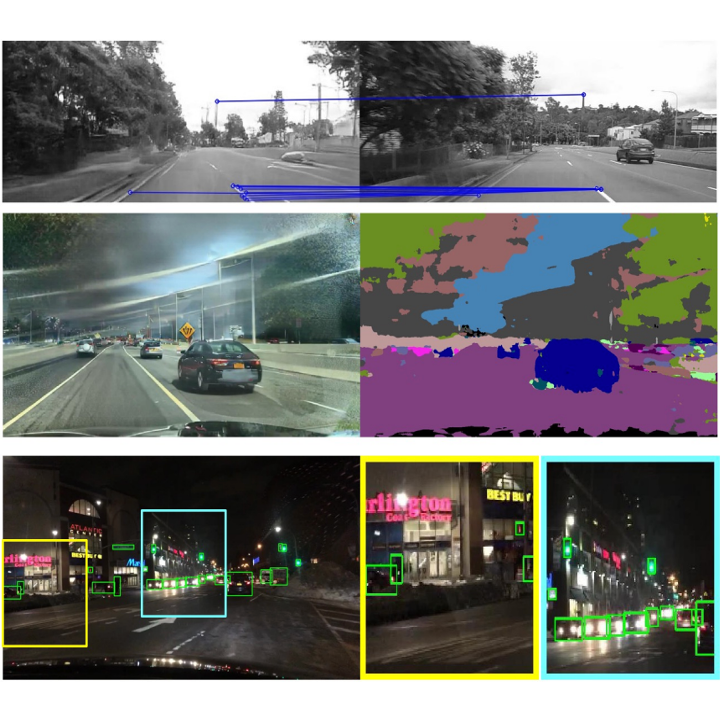

My research lies at the intersection of generative models, computer vision, and multimodal learning.
I develop efficient architectures, representations and inference-time algorithms for visual perception and reasoning, drawing on insights from mathematical modeling and human visual perception. More broadly, I aim to build perceptually grounded visual systems that generalize robustly and learn efficiently.
Some papers are highlighted.

We introduce derivative representation alignment (dREPA) for image-to-video generation and show it improves subject consistency and leads to better generalization across artistic styles.

We show that a novel pixel-space video diffusion model trained from scratch estimates accurate shape and material from short videos, and also produces diverse shape and material samples for ambiguous input images.


We present a bottom-up, patch-based diffusion model for monocular shape from shading that produces multimodal outputs, similar to multistable perception in humans.

We present new theoretical insight on the equivalence of multi-task and single-task learning for stationary kernels and develop MPHD for model pre-training on heterogeneous domains.

We present a neural model for inferring a curvature field from shading images that is invariant under lighting and texture variations, drawing on perceptual insights and mathematical derivations.


Auxiliary objectives and instruction augmentation improve spatial reasoning in the 'blocks world' task, especially under limited data.


We introduce a task-agnostic image translation model ForkGAN that effectively disentangles domain-specific and domain-invariant information.
Outside of research, I enjoy visiting art museums, watching movies and reading about philosophy and psychology.